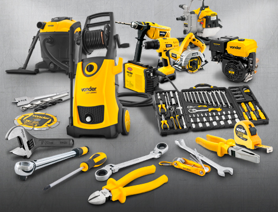

O melhor e mais completo mix de ferragens, ferramentas, máquinas e equipamentos para uso profissional do mercado
A VONDER é referência no mercado nacional no desenvolvimento de ferragens, ferramentas, máquinas e equipamentos para uso profissional e industrial, aliando alta performance, resistência, segurança e ergonomia. Possui o melhor e mais completo mix do mercado, contando com milhares de itens para os mais diversos segmentos de atuação.
No mercado há 25 anos, a VONDER é reconhecida pelo público e mídia especializada como uma das principais marcas do setor, conquistando sua liderança através de investimentos em tecnologia e rigor técnico no desenvolvimento de seus produtos.
Produtos
Comercializa produtos nas seguintes categorias: abrasivos, adesivos, vedantes e lubrificantes, equipamentos e acessórios para pintura, ferramentas de corte, ferramentas manuais, construção civil, ferramentas agrícolas, jardinagem e pulverização, máquinas e equipamentos, ferragens, fitas, fixadores, medição, solda, segurança e diversos equipamentos de uso industrial e profissional.
